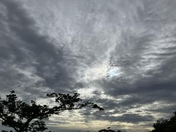

うるがいの話 ある日
最新: 北海道の今【うるがいの話 ある日】とは 一日だけのプログです
『うるがいの話』の最新一日だけのプログで、通信料が少なく経済的だ。カニの画像をクリックすると全ての日付が載る『うるがいの話』サイトを表示します
|
|
【うるがいの話】 うるがい(ｳﾙｶﾞｲ urugai)とは、『もずくがに』の名前でとても大きくなります。 |
|---|---|
|
|
【カミマヤーの話】 猫のことを方言でマヤーといいます。カミマヤー（kamimayaa）とは、神の猫のことです。 |
|
【たながぁの音楽】 たながぁ（ﾀﾅｶﾞｰ tanagaa）とは手長えびのことで、何種類かあり大きいのは車 エビぐらいになります。 |

|
【ぶながぁの話】 ぶながぁ(ﾌﾞﾅｶﾞｰ bunagaa)とは、赤い髪の毛、赤い身体、そして身長は１ｍ２０ｃｍ ぐらい、川の蟹を食べているの目撃された。場所は沖縄県国頭郡大宜味村のと ある村僕の隣近所に住んでいる爺さんから、聞いた話です。 |
|
|
【ギーマの話】 ギーマ(giima)とは、山原の里山に咲くスズランに似た、 花を付けます。実は食べられます、 気が付くと口の周りが紫になっています。 |
2025年07月08日 (火）北海道の今
16:07

一緒になれた遺骨 福山 啓子 ７４歳 琉球新報より
新婚当初、永住と決めて住んだ札幌だったが２０年前、やむなく離
れた。早世した子ども２人の墓参りも今後できなくなるので墓じま
いに訪れた。
住んでいた頃の６月は涼しくて、内地からの来客には天然クーラー
が何よりのおもてなしだった。午後３時を過ぎると寒くて上着が必
要だった。
しかし滞在中は連日３０度を超え、猛暑は沖縄以上だった。思い出
の地、親しい友人に別れを告げて帰る日に、娘が熱中症になり、救
急搬送される事態となった。両親の付き添いで来たはずの娘を残し
て、われわれは予定の便に何とか間に合った。
娘は知らない病院に運ばれ、保険証がなく１万円払った。飛行機は
払い戻しができず、ホテルも空きがなく、夏場料金は高く、思わぬ
出費となった。翌朝の便で元気になって帰ってきた。
（千葉県流山市）
上手い文書である、私も北海道はクラーは必要ないと聞かされた。
「沖縄は日本の避暑地です」ついに札幌が・・・もはや冗談で済ま
されない“令和７年夏”に波紋
札幌で３３℃、名古屋では３８℃、大阪で３７℃、東京でも３５℃
以上と、まさに体温に迫る危険な暑さが続く見込みです。
全国の天気予報を見るたびに、感じることです。去年の４月、名古
屋にいた時、現地の人は夏になると暑いですよと言っていた。８年
前、高松のタクシー運転手が、近頃の暑さは耐えきれなですよと言
っていた。